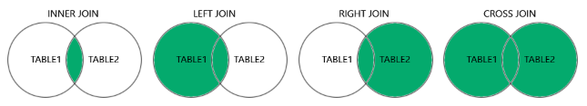

MySQL அட்டவணைகளை இணைத்தல்
ஒரு JOIN கிளாஸ் இரண்டு அல்லது அதற்கு மேற்பட்ட அட்டவணைகளிலிருந்து வரிசைகளை இணைக்கப் பயன்படுகிறது, அவற்றுக்கிடையேயான தொடர்புடைய நெடுவரிசையின் அடிப்படையில்.
"Orders" அட்டவணையிலிருந்து ஒரு தேர்வைப் பார்ப்போம்:
| OrderID | CustomerID | OrderDate |
|---|---|---|
| 10308 | 2 | 1996-09-18 |
| 10309 | 37 | 1996-09-19 |
| 10310 | 77 | 1996-09-20 |
பின்னர், "Customers" அட்டவணையிலிருந்து ஒரு தேர்வைப் பார்ப்போம்:
| CustomerID | CustomerName | ContactName | Country |
|---|---|---|---|
| 1 | Alfreds Futterkiste | Maria Anders | Germany |
| 2 | Ana Trujillo Emparedados y helados | Ana Trujillo | Mexico |
| 3 | Antonio Moreno Taquería | Antonio Moreno | Mexico |
"Orders" அட்டவணையில் உள்ள "CustomerID" நெடுவரிசை "Customers" அட்டவணையில் உள்ள "CustomerID" ஐக் குறிக்கிறது என்பதைக் கவனிக்கவும். மேலே உள்ள இரண்டு அட்டவணைகளுக்கிடையேயான உறவு "CustomerID" நெடுவரிசையாகும்.
பின்னர், இரண்டு அட்டவணைகளிலும் பொருந்தக்கூடிய மதிப்புகளைக் கொண்ட பதிவுகளைத் தேர்ந்தெடுக்கும் பின்வரும் SQL கூற்றை (ஒரு INNER JOIN ஐக் கொண்டிருக்கும்) உருவாக்கலாம்:
SELECT Orders.OrderID, Customers.CustomerName, Orders.OrderDate
FROM Orders
INNER JOIN Customers ON Orders.CustomerID=Customers.CustomerID;இது இதைப் போன்ற ஒன்றை உருவாக்கும்:
| OrderID | CustomerName | OrderDate |
|---|---|---|
| 10308 | Ana Trujillo Emparedados y helados | 9/18/1996 |
| 10365 | Antonio Moreno Taquería | 11/27/1996 |
| 10383 | Around the Horn | 12/16/1996 |
| 10355 | Around the Horn | 11/15/1996 |
| 10278 | Berglunds snabbköp | 8/12/1996 |
MySQL இல் ஆதரவளிக்கப்படும் ஜாயின் வகைகள்
INNER JOIN
இரண்டு அட்டவணைகளிலும் பொருந்தக்கூடிய மதிப்புகளைக் கொண்ட பதிவுகளை வழங்குகிறது
LEFT JOIN
இடது அட்டவணையிலிருந்து அனைத்து பதிவுகளையும் மற்றும் வலது அட்டவணையிலிருந்து பொருந்தக்கூடிய பதிவுகளையும் வழங்குகிறது
RIGHT JOIN
வலது அட்டவணையிலிருந்து அனைத்து பதிவுகளையும் மற்றும் இடது அட்டவணையிலிருந்து பொருந்தக்கூடிய பதிவுகளையும் வழங்குகிறது
CROSS JOIN
இரண்டு அட்டவணைகளிலிருந்தும் அனைத்து பதிவுகளையும் வழங்குகிறது
MySQL ஜாயின் வகைகள்:
- MySQL INNER JOIN: பொதுவான பதிவுகளை மட்டுமே காட்டுகிறது
- MySQL LEFT JOIN: இடது அட்டவணையின் அனைத்து பதிவுகளையும் காட்டுகிறது
- MySQL RIGHT JOIN: வலது அட்டவணையின் அனைத்து பதிவுகளையும் காட்டுகிறது
- MySQL CROSS JOIN: அனைத்து சாத்தியமான இணைப்புகளையும் காட்டுகிறது